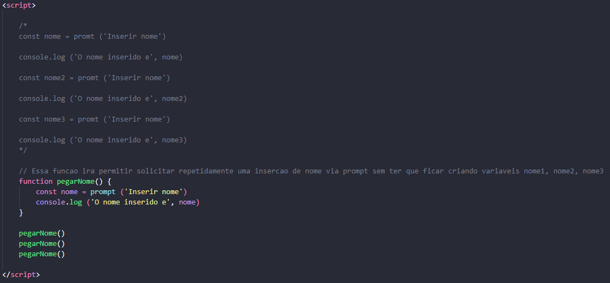

Em JS pode-se definir uma function para execução de um cálculo ou coleta de dados que seja recorrente e usada em outros momentos do projeto. Após a definição dessa função, pode-se evocá-la digitando o seu nome e os parâmetros.
A função pode ser descrita sem nenhum parâmetro () ou pode conter um parâmetro fixo ou variável.
Abaixo um exemplo de como usar uma função para evitar ter que escrever o mesmo comando várias vezes. Compare a função criada com as linhas logo acima que estão comentadas.
No caso abaixo, uma função numero foi criada para solicitar uma entrada do usuário via prompt, e uma condição a ser verificada, com um alert ou console log para voltar o resultado. Após a criação da função, é preciso chama-la, no exemplo, chamamos ela 3 vezes, ou seja, o usuário vai ser requisitado de digitar 3 vezes, e a verificação vai ocorrer em cada uma das vezes e voltar o alert conforme o resultado.
Abaixo verificamos um exemplo com a utilização de parâmetros na função criada. A função foi criada para somar 2 números, e basicamente ela sinaliza que quando você chamar aquela função, você deverá digitar os parâmetros (num1 e num2) que neste caso, serão dois números. Ao invocar a função somar(1,1) você está puxando a função criada para executar a soma de 1 + 1. O resultado será exibido no console conforme foi solicitado no exemplo. Quantas vezes precisar somar, você poderá invocar a função e alterar os parâmetros.
Aqui podemos ver um exemplo utilizando também o return, que trás o valor que foi definido naquela função, para ser usado em outra função. Além disso, usamos uma condição para verificar se atende ou não uma idade mínima. Neste exemplo ainda definimos os valores duretamente no invocação da função, já que não usamos o prompt para solicitar do usuário.
O return será trazido quando for criada uma nova const ou let que será igual à invocação da função. Caso haja um prompt ou alert na função, ele será trazido também ao utilizar o return para criar uma nova variável. Depois, utilizamos uma nova função para poder comparar a um valor e trazer um console log.
Primeiramente criei uma função para coletar os dados do usuário via prompt. Chamei o return somando o valor das entradas.
Depois foi criada uma função para solicitar outra entrada do usuário. Essa entrada será feita em outro momento. Perceba que o prompt, alert ou sonsole log devem ser usados na função para que ocorram quando ela for executada.
Outra função, agora para multiplicar os valores, foi criada. Ela será usada para realizar a conversão de dólar para real.
Perceba que foi comentada uma nova função de multiplicação, apenas para efeitos de estudo, pois das duas formas funciona. Essa outra multiplicação voltará o valor do imposto calculado convertido em real.
Uma outra função, com três parâmetros, foi criada para realizar a mesma conta da função que está comentada.
Depois criei uma nova função que vai calcular o valor do imposto de acordo com o valor da compra. Até 50 dólares, 20% de imposto, acima de 50 dólares, 60% de imposto + ICMS.
Aqui foi criada uma função para calcular o valor total, que considera o valor da compra + os impostos.
Criei uma nova const para trazer o return dos primeiros dados digitados pelo usuário.
Chamamos a função do imposto de acordo com a faixa de preço.
Criamos uma outra const para chamar o return do valor total da compra com impostos inclusos.
Criamos outra const para chamar o return da função do cambio, onde vai solicitar mais uma inserção de dados, a cotação do dia. Depois chamamos a função mult que criamos para trazer o valor total da compra + impostos, convertido em real.
Usamos a função sub, que poderia ter sido comentada e utilizarmos a função mult1, com o mesmo efeito, para trazer o valor do imposto separadamente, e convertido em real.